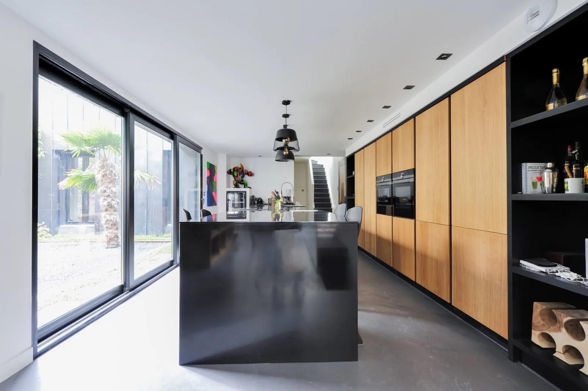
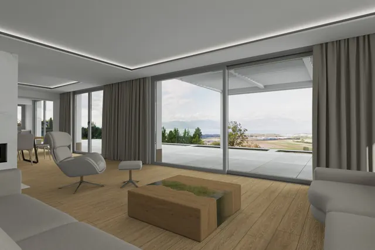
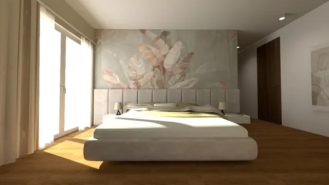
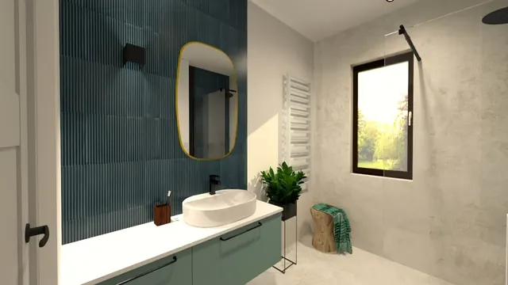
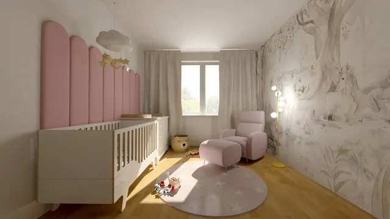
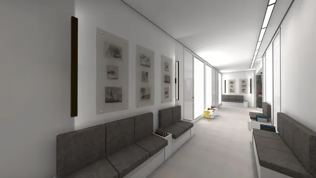
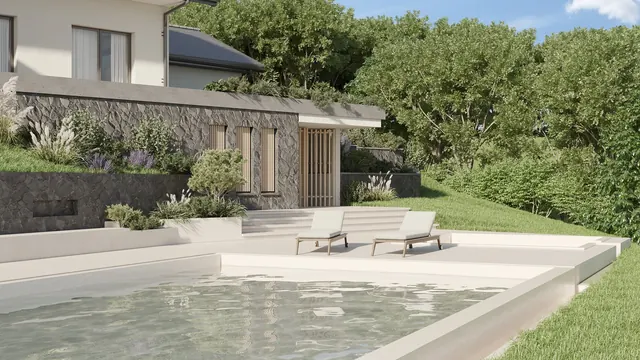
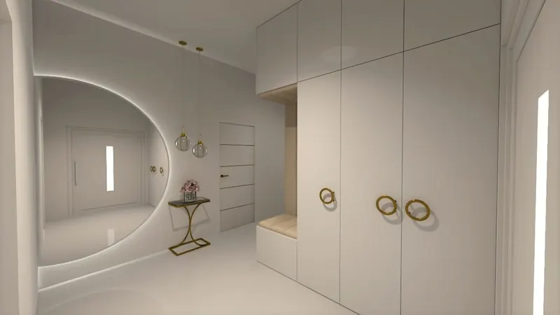
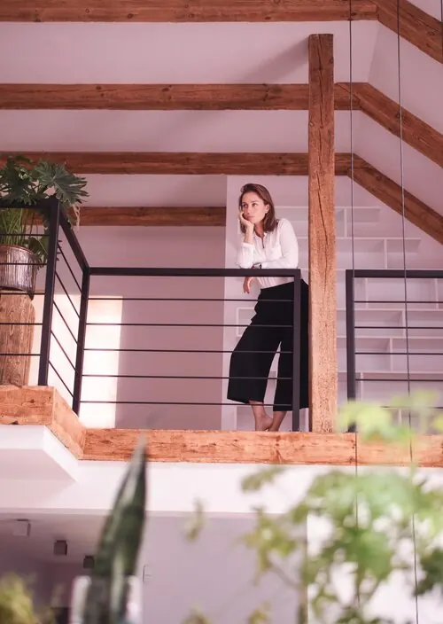

Projektowanie wnętrz, które opowiadają o Tobie
Domy, mieszkania i wnętrza komercyjne. Cały projekt od razu w 3D, potem dokumentacja, zakupy i nadzór nad wykończeniem.
Umów pierwsze spotkaniealbo zadzwoń: 693 307 962
Ars Projekt, czyli sztuka tworzenia wnętrz
Pracownia powstała z pasji do pięknych przestrzeni, dobrego designu i mebli najlepszej jakości. Najważniejszy jest człowiek, dla którego projektuję: jego gust, codzienne nawyki i potrzeby wszystkich domowników.
Lubię swobodnie łączyć style i tworzyć rozwiązania ponadczasowe, ale praktyczne. Stawiam na prostotę, stonowane kolory, naturalne materiały i rzemiosło.
„Twój dom powinien opowiadać historię o tym, kim naprawdę jesteś, być kolekcją tego, co kochasz.”
Nate Berkus
Co projektuję
Pojedyncze pomieszczenia albo całe domy, wnętrza prywatne i komercyjne, a także tarasy i ogrody.

Salon i kuchnia
Serce domu, skrojone na miarę rodziny.

Sypialnie
Miejsce, w którym po całym dniu można odpocząć.

Łazienki
Harmonijne, spójne z resztą domu, na lata.

Pokoje dzieci
Projekt, w którym liczy się zdanie młodego człowieka.

Wnętrza komercyjne
Przychodnie, hotele, kawiarnie, przedszkola.

Ogrody i tarasy
Aranżacje tarasów, ogrodów i dobór roślin do domu.

Jak pracuję
Nie pokazuję kilku płaskich rzutów do zgadywania. Od razu pracujemy na fotorealistycznych wizualizacjach, więc wiadomo, jak będzie wyglądał dom, zanim zacznie się remont.
1Poznajmy się
Rozmawiamy o funkcji i charakterze wnętrza, o tym, jak spędzacie czas i czego potrzebuje każdy domownik. Potem inwentaryzacja pomiarowa i zdjęcia albo praca na rzutach, jeśli dom jest w budowie.
2Tworzymy razem w 3D
Cały projekt w wizualizacjach: architektura wnętrza, materiały, wyposażenie i oświetlenie. Zmieniamy i dopracowujemy, aż powstanie wersja ostateczna.
3Dokumentacja i zakupy
Komplet rysunków technicznych, zabudów meblowych i detali oraz zestawienia materiałów i wyposażenia. Na tej podstawie można przejść do zakupów.
4Nadzór autorski
Pilnuję logistyki dostaw i przebiegu prac wykończeniowych. Współpracuję ze sprawdzonymi ekipami i firmami branżowymi.
Realizacje

O mnie
Wnętrzarstwa, nowych technologii i produkcji mebli na wymiar uczyłam się, pracując w Polsce i we Francji: jako projektantka, sprzedawczyni i manager eksportu na rynki zachodnie. Dzięki temu znam cały proces od strony technologii, obsługi klienta i prowadzenia inwestycji.
Prowadzę projekt od pierwszej koncepcji, przez wizualizacje i dokumentację wykonawczą, po nadzór nad realizacją. O wykończenie każdego detalu dbają doświadczeni fachowcy, z którymi współpracuję od lat.
„Prostota jest szczytem wyrafinowania.”
Leonardo da Vinci
Porozmawiajmy o Twoim wnętrzu
Każda wycena jest indywidualna. Napisz kilka słów o swoim domu albo lokalu, a odpowiem i umówimy pierwsze spotkanie.